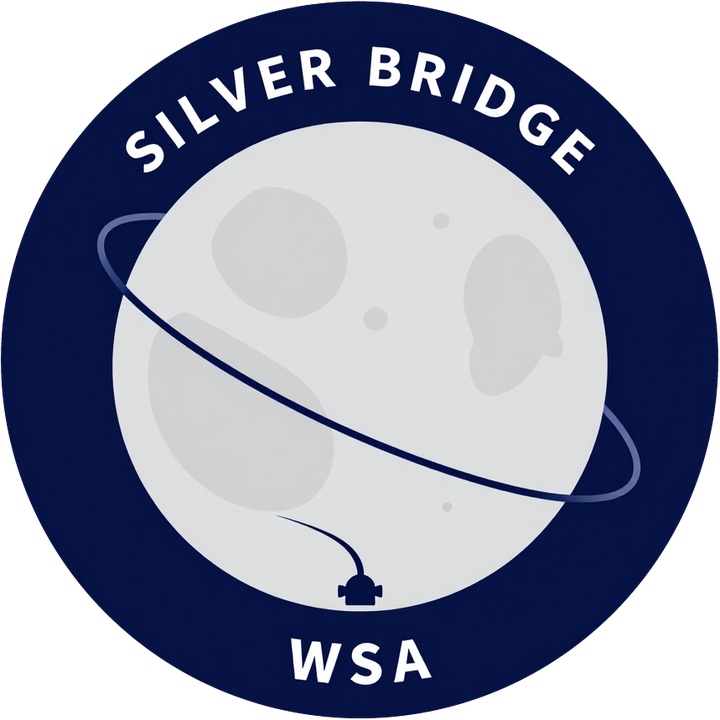

Detailed records of major WSA missions, project status, and engineering outcomes.
FAMMOK is WSA's lander and planetary-mission development program. Mission numbers indicate progression in capability and ambition, not merely cosmetic changes. Each FAMMOK mission builds on previous experience and explores new operational challenges.
Silver Bridge was an experimental, one-off mission designed to test surface operations on the Mun and evaluate return-and-dock procedures with KGOSS orbital station.

The following mission categories have records available or planned for documentation:
Station assembly, supply transport, crew rotation, and expansion module delivery. Archive under development.
Crew rotation to KGOSS, crew transport to lunar orbit, and crewed deep-space operations. Records available for recent flights.
Contingency recovery, crew rescue, and vehicle recovery from unplanned scenarios. Examples: Silver Bridge recovery.
Aegis family recovery missions, AutoLand validation flights, and booster development testing. 47+ successful recoveries archived.
Satellite deployment, atmospheric research, orbital experiments, and technology demonstrations.
Upcoming Lyra first flight, SSTO orbital attempts, FAMMOK-3 deep-space mission, and other developing programs.
The mission archive is continuously updated as new flights occur and historical records are compiled. Detailed records for each major mission will be expanded and linked as information is verified and documented.